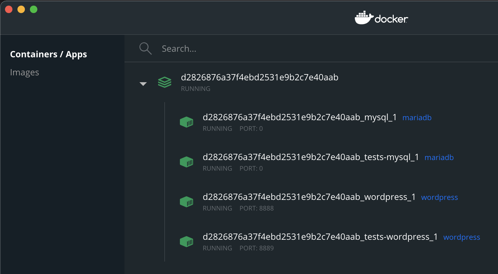
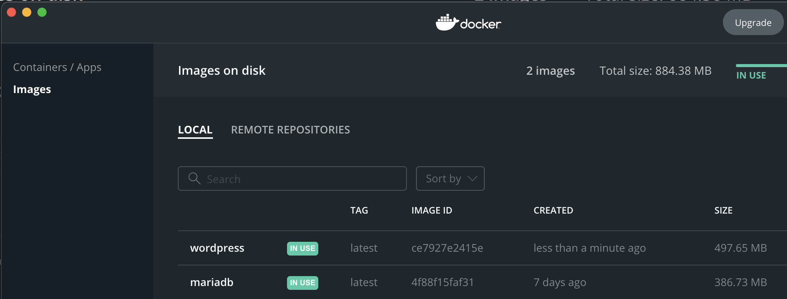

Getting Started With Code Contribution  Edit
Edit
The following guide is for setting up your local environment to contribute to the Gutenberg project. There is significant overlap between an environment to contribute and an environment used to extend the WordPress block editor. You can review the Development Environment tutorial for additional setup information.
Prerequisites Prerequisites
- Node.js
Gutenberg is a JavaScript project and requires Node.js. The project is built using the latest active LTS release of node, and the latest version of NPM. See the LTS release schedule for details.
We recommend using the Node Version Manager (nvm) since it is the easiest way to install and manage node for macOS, Linux, and Windows 10 using WSL2. See our Development Tools guide or the Nodejs site for additional installation instructions.
- Git
Gutenberg is using git for source control. Make sure you have an updated version of git installed on your computer, as well as a GitHub account. You can read the Git Workflow to learn more about using git and GitHub with Gutenberg -
[Recommended] Docker Desktop
We recommend using the wp-env package for setting WordPress environment locally. You’ll need to install Docker to usewp-env. See the Development Environment tutorial for additional details.Note: To install Docker on Windows 10 Home Edition, follow the install instructions from Docker for Windows with WSL2.
As an alternative to Docker setup, you can use Local by Flywheel, WampServer, or MAMP, or even use a remote server.
Getting the Gutenberg code Getting the Gutenberg code
Fork the Gutenberg repository, clone it to your computer and add the WordPress repository as upstream.
$ git clone https://github.com/YOUR_GITHUB_USERNAME/gutenberg.git $ cd gutenberg $ git remote add upstream https://github.com/WordPress/gutenberg.git
Building Gutenberg as a plugin Building Gutenberg as a plugin
Install the Gutenberg dependencies and build your code in development mode:
npm ci npm run dev
Note: The install scripts require Python to be installed and in the path of the local system. This might be installed by default for your operating system, or require downloading and installing.
There are two ways to build your code. While developing, you probably will want to use npm run dev to run continuous builds automatically as source files change. The dev build also includes additional warnings and errors to help troubleshoot while developing. Once you are happy with your changes, you can run npm build to create optimized production build.
Once built, Gutenberg is ready to be used as a WordPress plugin!
Local WordPress Environment Local WordPress Environment
To test a WordPress plugin, you need to have WordPress itself installed. If you already have a WordPress environment setup, use the above Gutenberg build as a standard WordPress plugin by putting the gutenberg directory in your wp-content/plugins/ directory.
If you do not have a local WordPress environment setup, follow the steps in the rest of this section to create one.
Using Docker and wp-env Using Docker and wp-env
The wp-env package was developed with the Gutenberg project as a quick way to create a standard WordPress environment using Docker. It is also published as the @wordpress/env npm package.
By default, wp-env can run in a plugin directory to create and run a WordPress environment, mounting and activating the plugin automatically. You can also configure wp-env to use existing installs, multiple plugins, or themes. See the wp-env package for complete documentation.
Make sure Docker is running, and start wp-env from within the gutenberg directory:
npm run wp-env start
This script will create a Docker instance behind the scenes with the latest WordPress Docker image, and then will map the Gutenberg plugin code from your local copy to the environment as a Docker volume. This way, any changes you make to the code locally are reflected immediately in the WordPress instance.
Note:
npm runwill use thewp-env/WordPress?? version specified within the Gutenberg project, making sure you are running the latest wp-env version.
To stop the running environment:
npm run wp-env stop
If everyting went well, you should see the following message in your terminal:
WordPress development site started at http://localhost:8888/ WordPress test site started at http://localhost:8889/ MySQL is listening on port 51220 ✔ Done! (in 261s 898ms)
And if you open Docker dashboard by rightclicking the icon in the menu bar(on Mac) or system tray (on Linux and Windows) and selecting ‘Dashboard’, you will see that the script has downloaded some Docker Images, and is running a Docker Container with fully functional WordPress installation:


To destroy the install completely:
npm run wp-env destroy
Explore the package documentation for additional commands.
Accessing the Local WordPress Install Accessing the Local WordPress Install
The WordPress installation should now be available at `http://localhost:8888`
You can access the Dashboard at: http://localhost:8888/wp-admin/` using **Username**:admin, **Password**:password`. You’ll notice the Gutenberg plugin installed and activated, this is your local build.
Accessing the MySQL Database Accessing the MySQL Database
To access the MySQL database on the wp-env instance you will first need the connection details. To do this:
- In a terminal, navigate to your local Gutenberg repo.
- Run
npm run wp-env start– various information about thewp-envenvironment should be logged into the terminal. - In the output from step 2, look for information about the MySQL port:
For example:
MySQL is listening on port {MYSQL_PORT_NUMBER}
- Copy / make a note of this port number (note this will change each time
wp-envrestarts). - You can now connect to the MySQL instance using the following details (being sure to replace
{MYSQL_PORT_NUMBER}with the port number from step three):
Host: 127.0.0.1
Username: root
Database: wordpress
Port: {MYSQL_PORT_NUMBER}
Please note: the MySQL port number will change each time wp-env restarts. If you find you can no longer access your database, simply repeat the steps above to find the new port number and restore your connection.
Tip: Sequel Ace is a useful GUI tool for accessing a MySQL database. Other tools are available and documented in this article on accessing the WordPress database.
Troubleshooting Troubleshooting
If you run into an issue, check the troubleshooting section in wp-env documentation.
Using Local or MAMP Using Local or MAMP
As an alternative to Docker and wp-env, you can also use Local by Flywheel, WampServer, or MAMP to run a local WordPress environment. To do so clone and install Gutenberg as a regular plugin in your installation by creating a symlink or copying the directory to the proper wp-content/plugins directory.
You will also need some extra configuration to be able to run the e2e tests.
Change the current directory to the plugins folder and symlink all e2e test plugins:
ln -s gutenberg/packages/e2e-tests/plugins/* .
You’ll need to run this again if new plugins are added. To run e2e tests:
WP_BASE_URL=http://localhost:8888/gutenberg npm run test-e2e
Caching of PHP files Caching of PHP files
You’ll need to disable OPCache in order to correctly work on PHP files. To fix:
- Go to MAMP > Preferences > PHP
- Under Cache, select off
- Confirm with OK
Incoming connections Incoming connections
By default, the web server (Apache) launched by MAMP will listen to all incoming connections, not just local ones. This means that anyone on the same local network (and, in certain cases, anyone on the Internet) can access your web server. This may be intentional and useful for testing sites on other devices, but most often this can be a privacy or security issue. Keep this in mind and don’t store sensitive information in this server.
While it is possible to fix this, you should fix it at your own risk, since it breaks MAMP’s ability to parse web server configurations and, as a result, makes MAMP think that Apache is listening to the wrong port. Consider switching away from MAMP. Otherwise, you can use the following:
- Edit
/Applications/MAMP/conf/apache/httpd.conf - Change
Listen 8888toListen 127.0.0.1:8888
Linking to other directories Linking to other directories
You may like to create links in your plugins and themes directories to other folders, e.g.
- wp-content/plugins/gutenberg -> ~/projects/gutenberg
- wp-content/themes/twentytwenty -> ~/projects/twentytwenty
If so, you need to instruct Apache to allow following such links:
- Open or start a new file at
/Applications/MAMP/htdocs/.htaccess - Add the following line:
Options +SymLinksIfOwnerMatch
Using WP-CLI Using WP-CLI
Tools like MAMP tend to configure MySQL to use ports other than the default 3306, often preferring 8889. This may throw off WP-CLI, which will fail after trying to connect to the database. To remedy this, edit wp-config.php and change the DB_HOST constant from define( 'DB_HOST', 'localhost' ) to define( 'DB_HOST', '127.0.0.1:8889' ).
On A Remote Server On A Remote Server
You can use a remote server in development by building locally and then uploading the built files as a plugin to the remote server.
To build: open a terminal (or if on Windows, a command prompt) and navigate to the repository you cloned. Now type npm ci to get the dependencies all set up. Once that finishes, you can type npm run build.
After building the cloned gutenberg directory contains the complete plugin, you can upload the entire repository to your wp-content/plugins directory and activate the plugin from the WordPress admin.
Another way to upload after building is to run npm run build:plugin-zip to create a plugin zip file — this requires bash and php to run. The script creates gutenberg.zip that you can use to install Gutenberg through the WordPress admin.
Storybook Storybook
Storybook is an open source tool for developing UI components in isolation for React, React Native and more. It makes building stunning UIs organized and efficient.
The Gutenberg repository also includes Storybook integration that allows testing and developing in a WordPress-agnostic context. This is very helpful for developing reusable components and trying generic JavaScript modules without any backend dependency.
You can launch Storybook by running npm run storybook:dev locally. It will open in your browser automatically.
You can also test Storybook for the current trunk branch on GitHub Pages: https://wordpress.github.io/gutenberg/
Developer Tools Developer Tools
We recommend configuring your editor to automatically check for syntax and lint errors. This will help you save time as you develop by automatically fixing minor formatting issues. Here are some directions for setting up Visual Studio Code, a popular editor used by many of the core developers, these tools are also available for other editors.
EditorConfig EditorConfig
EditorConfig defines a standard configuration for setting up your editor, for example using tabs instead of spaces. You should install the EditorConfig for VS Code extension and it will automatically configure your editor to match the rules defined in .editorconfig.
ESLint ESLint
ESLint statically analyzes the code to find problems. The lint rules are integrated in the continuous integration process and must pass to be able to commit. You should install the ESLint Extension for Visual Studio Code, see eslint docs for more editor integrations.
With the extension installed, ESLint will use the .eslintrc.js file in the root of the Gutenberg repository for formatting rules. It will highlight issues as you develop, you can also set the following preference to fix lint rules on save.
"editor.codeActionsOnSave": {
"source.fixAll.eslint": true
},
Prettier Prettier
Prettier is a tool that allows you to define an opinionated format, and automate fixing the code to match that format. Prettier and ESlint are similar, Prettier is more about formatting and style, while ESlint is for detecting coding errors.
To use Prettier with Visual Studio Code, you should install the Prettier – Code formatter extension. You can then configure it to be the default formatter and to automatically fix issues on save, by adding the following to your settings. Note: depending on where you are viewing this document, the brackets may show as double, the proper format is just a single bracket.
"[javascript]": {
"editor.defaultFormatter": "esbenp.prettier-vscode",
"editor.formatOnSave": true
},
"[[markdown]]": {
"editor.defaultFormatter": "esbenp.prettier-vscode",
"editor.formatOnSave": true
},
This will use the .prettierrc.js file included in the root of the Gutenberg repository. The config is included from the @wordpress/prettier-config package.
If you only want to use this configuration with the Gutenberg project, create a directory called .vscode at the top-level of Gutenberg, and place your settings in a settings.json there. Visual Studio Code refers to this as Workplace Settings, and only apply to the project.
For other editors, see Prettier’s Editor Integration docs
TypeScript TypeScript
TypeScript is a typed superset of JavaScript language. The Gutenberg project uses TypeScript via JSDoc to type check JavaScript files. If you use Visual Studio Code, TypeScript support is built-in, otherwise see TypeScript Editor Support for editor integrations.